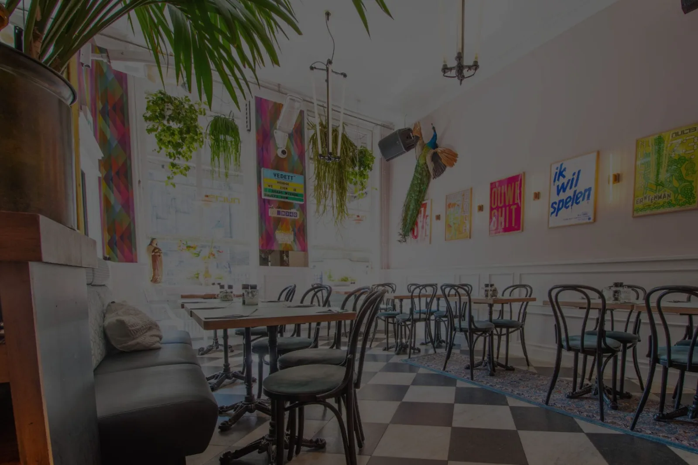
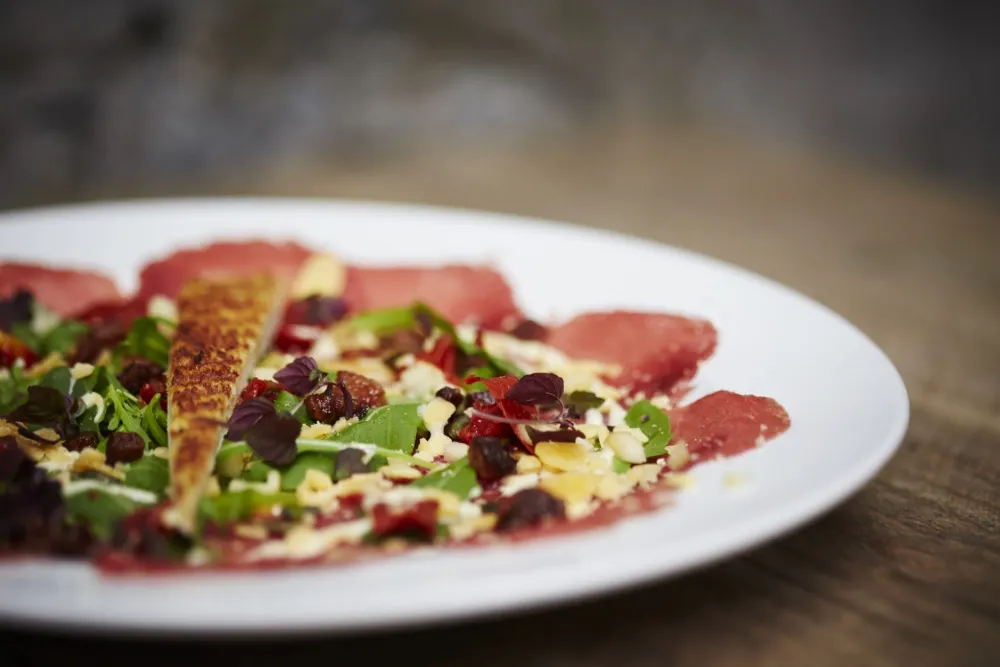
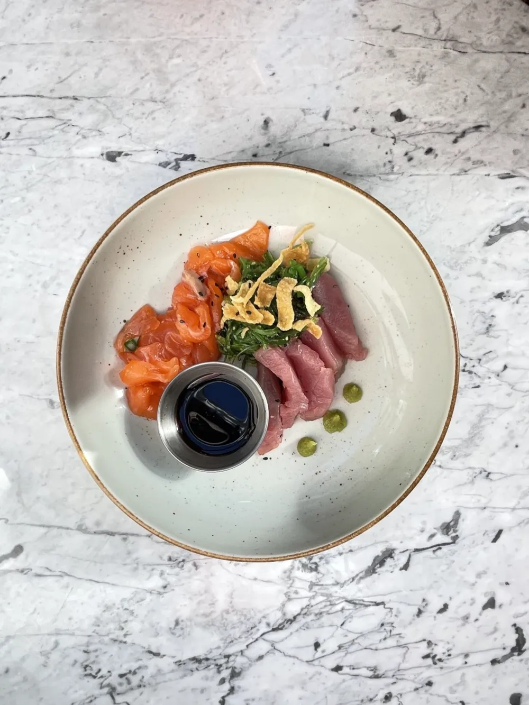
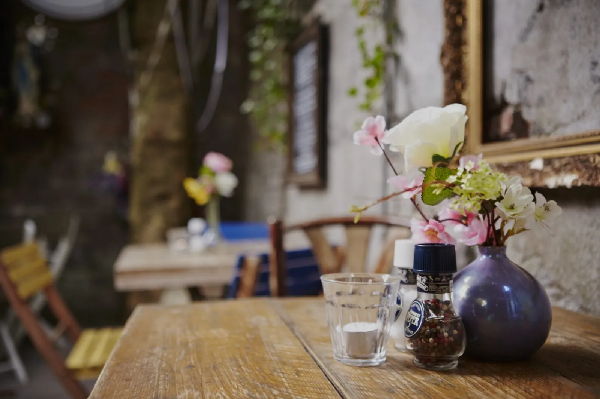
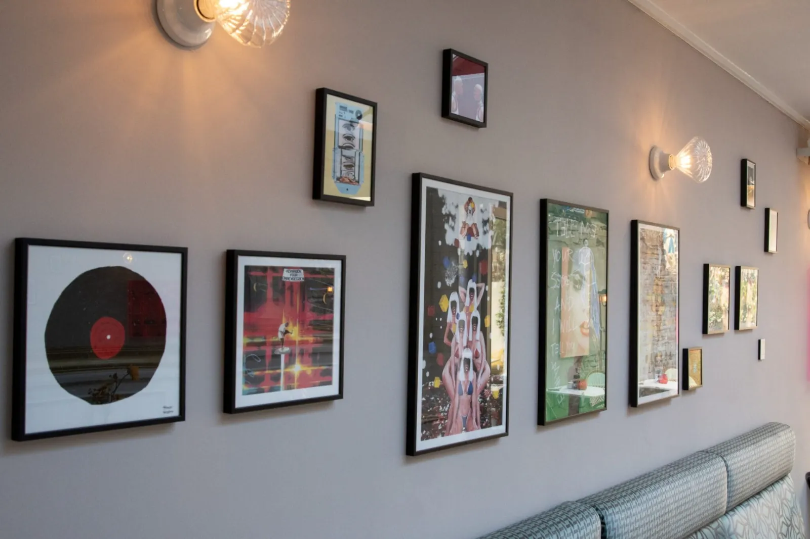
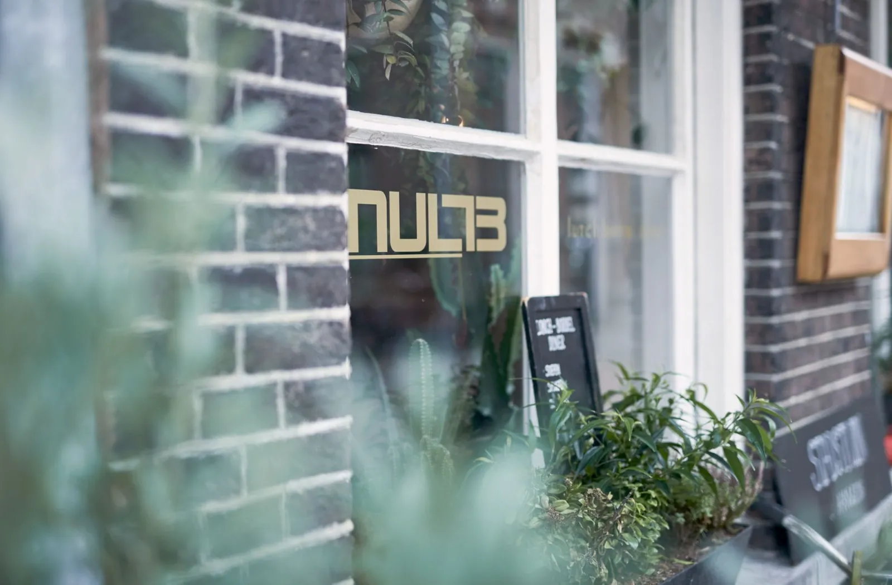

Lunch- en dinercafé tegenover de Sint-Jan
Genieten van het echte leven
Koffie met iets lekkers, een uitgebreide lunch, shared dining of een ontspannen borrel. In ons café of in de stadstuin, met uitzicht op de Sint-Jan.
Dinsdag t/m zondag open van 11.00 tot 22.00 uur



Het meest eigenwijze lunch- en dinercafé van Den Bosch
Ben je liefhebber van puur en (h)eerlijk eten? Hou je van een ongedwongen, relaxte (huiskamer)sfeer? En laat je je graag verrassen door originaliteit, eigenzinnigheid en gezelligheid? Toevallig, wíj ook!
Weet je wat het leuke is aan onze chef? Hij barst van de creatieve ideeën. Zijn inspiratie komt uit alle windstreken en hij geeft vol lef zijn eigen draai aan bekende (wereld)gerechten. Puur, (h)eerlijk, vers en o zo lekker.

Plantaardig sinds 2011
Sinds 2011 staat Nul73 bekend om zijn eigenzinnige plantaardige gerechten. Tussen de burger en het biefstukje vind je ook een vegan garnalentartaar of een vegan panna cotta. Op de kaart herken je ze aan vegan.
Glutenvrij, ook bij coeliakie
We hebben een uitgebreid glutenvrij aanbod. Speciale wensen of allergieën? Bel ons even, dan zorgen we dat je zorgeloos kunt genieten.

NUL73 High Tea
€ 34,- per persoon minimaal 2 personen, op reservering
Alle hapjes maken we zelf.
Zoete lekkernijen
- Vegan dubbele chocolade brownie
- Carrot cake
- Crème brûlée
- Vegan panna cotta van vanille
Hartige hapjes
- Tomatensoep
- Brioche met truffelkroket, little gem en mosterdmayonaise
- Sandwich carpaccio met oude kaas, pittenmix en truffelmayonaise
- Club sandwich met zalm, avocado, tomaat, komkommer, rucola en honing-mosterddressing
- Zoete-aardappelfrietjes
Fruitig en thee
- 2 verschillende verse smoothies
- Onbeperkt thee, diverse soorten en smaken
Te reserveren dinsdag t/m vrijdag vanaf 12.00 uur, zaterdag en zondag vanaf 15.00 uur. In de vakanties vanaf 15.00 uur.
High tea reserverenZeven keer NUL73
Nul73 is als een kameleon die telkens van kleur verandert: we passen onze zaak continu aan de gasten aan. Ons café is bijzonder geschikt voor borrels, feesten en partijen op maat, met speciale aandacht voor festiviteiten op creatief en cultureel vlak. Hoe ziet jouw ultieme bezoek eruit? Zakelijk of privé, we denken graag met je mee.
Borrel
Borrelen met uitzicht op de Sint-Jan. Met vrienden, als netwerkcafé of zakelijk: de zakelijke borrel is hier al jaren een groot succes. Vriendelijke bediening, een intieme sfeer, hapjes, drankjes en goede muziek.
Verjaardag
Van babyshower en kinderpartijtje tot tienerfuif of een verrassingsfeest voor elk kroonjaar.
Bruiloft
Een sprookjesachtige plek met uitzicht op de Sint-Janskathedraal. De dag deel je in naar eigen wens, van het aansnijden van de bruidstaart tot een knalfeest als afsluiter.
Grote groepen
Lunchen, borrelen of eten: aan één lange tafel of dansend door de ruimte. Of reserveer de stadstuin voor een high tea, lunch of diner. Onze chef denkt graag mee over het menu.
Jubileumfeest
Een feest, jubileum, receptie of evenement, met hapjes en drankjes zoals jij het wilt.
Presentatie
Een presentatie, lezing, optreden, expositie of workshop: wij maken er een totaalbeleving van.
Of?
Iets heel anders in gedachten? Vertel ons je wensen, we denken graag mee.
Teamuitje? Samen met Aloha Events organiseren we teamuitjes en teambuilding voor 15 tot 100 personen.
Vertel ons je plannenZeker van een plekje?
Groot gelijk! Reserveer hier je tafel voor lunch, diner, high tea of borrel. Bellen mag ook altijd: 073 689 3250. Of mail naar reservering@nul73lunchendiner.nl.
Tot binnenkort!
Vraagje?
We kunnen je wel drieënzeventig keer vertellen hoe fantastisch het is bij Nul73, maar het is veel leuker om het zelf te ontdekken. Toch? Heb je een vraag of wil je óns iets vertellen? We zijn nieuwsgierig!
- Adres
- Torenstraat 9
5211 KK 's-Hertogenbosch - Telefoon
- 073 689 3250
- info@nul73lunchendiner.nl
Openingstijden
| Dinsdag | 11.00 - 22.00 |
|---|---|
| Woensdag | 11.00 - 22.00 |
| Donderdag | 11.00 - 22.00 |
| Vrijdag | 11.00 - 22.00 |
| Zaterdag | 11.00 - 22.00 |
| Zondag | 11.00 - 22.00 |
| Maandag | gesloten |

Plan je route